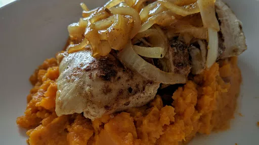

Moroccan chicken with sweet potato mash

Fragrant, tender chicken and creamy sweet potato mash makes a comforting and low-fat midweek meal.
Servings: 4
Total: 35 mins
Ingredients
- 1 kg sweet potatoes, cubed
- 2 tsp ras el hanout, or a mix of ground cinnamon and cumin
- 4 skinless boneless chicken breasts
- 2 tbsp olive oil
- 1 onion, thinly sliced
- 1 fat clove garlic, crushed
- 200 ml chicken stock
- 2 tsp clear honey
- juice ½ lemon
- handful green olives, pitted or whole
- 20 g pack coriander, leaves chopped
Instructions
- Boil the
potatoes1 kg
in salted water for 15 mins or until tender. Mix the ras el hanout2 tsp
with seasoning, then sprinkle all over the chicken4
. Heat 1 tbsp oil in large frying pan, then brown the chicken4
for 3 mins on each side until golden.
- Lift the
chicken4
out of the pan. Add the onion1
and garlic and cook for 5 mins until softened. Add the stock200 ml
, honey2 tsp
, lemon juice and oliveshandful
, return the chicken4
to the pan, then simmer for 10 mins until the sauce is syrupy and the chicken4
cooked.
- Mash the
potatoes1 kg
with 1 tbsp oil and season. Thickly slice each chicken4
breast and stir the coriander20 g pack
through the sauce. Serve the chicken4
and sauce over mash.
-
kcal
460
-
fat
9 g
-
saturates
2 g
-
carbs
59 g
-
sugar
18 g
-
fibre
7 g
-
protein
39 g
-
salt
1.11 g
www.bbcgoodfood.com
Short Link
Long Link